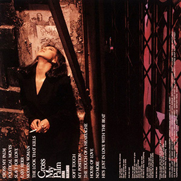

录音室专辑：第11张
发行年份：1987年
发行日期：8月25日
| 歌名 | 作词 | 作曲 |
|---|---|---|
| CROSS MY PALM | Barrie Corbett-John De Plesses | Chris Morris |
| POLITICAL MOVES | Julia Downes-Roger Bruno-Ellen Schwartz | Julia Downes-Roger Bruno-Ellen Schwartz |
| SLAVE FOR LOVE | David Batteau-Don Freeman | David Batteau-Don Freeman |
| EASY RIDER | David Batteau-Danny Sembello-Gardner Cole | David Batteau-Danny Sembello-Gardner Cole |
| MODERN WOMAN (FEMME D’ AUJOURD’ HUI) | Jeanne Mas、Linda Hennrick（英語詞） | Romano Musumarra-R.Zaneli |
| THE LOOK THAT KILLS | Biddu-Winston Sela | Biddu-Winston Sela |
| SOFT TOUCH | Steve Skaith-Steve Jeffries | Steve Skaith-Steve Jeffries |
| MY POSITION | Humecke-Batteau-Robin Lane | Humecke-Batteau-Robin Lane |
| THE TOUCH OF A HEARTACHE | Jill Golucci-Roger Bruno-Ellen Schwartz | Jill Golucci-Roger Bruno-Ellen Schwartz |
| HOUSE OF LOVE | Sandy Stewart | Sandy Stewart |
| NO MORE | Steve Skaith-Steve Jeffries | Steve Skaith-Steve Jeffries |
| HE’S JUST IN LOVE WITH THE BEAT | Roy Freeland-Roger Bruno-Ellen Schwartz | Roy Freeland-Roger Bruno-Ellen Schwartz |
首发规格：黑胶 LP: L-12651，卡带 CT: LKF-8151，CD: 32XL-192
唱片公司：Reprise Records，Warner Pioneer
排行榜：Oricon公信榜LP&卡带周榜第1位，1987年度专辑榜第19位
再发行：
1989年10月10日 - LP: 82037-1，CT: 82037-4，CD: 82037-2
1989年11月1日 - CD: 21L2-0130
1991年7月17日 - CD: WPCL-423
2006年6月21日 - CD、数码下载: WPCL-10288
2006年7月26日 - 数码下载
2012年8月22日 - SACD/CD: WPCL-11146
2014年1月29日 - CD: WPCL-11732
2018年7月4日 - LP: WPJL-10095